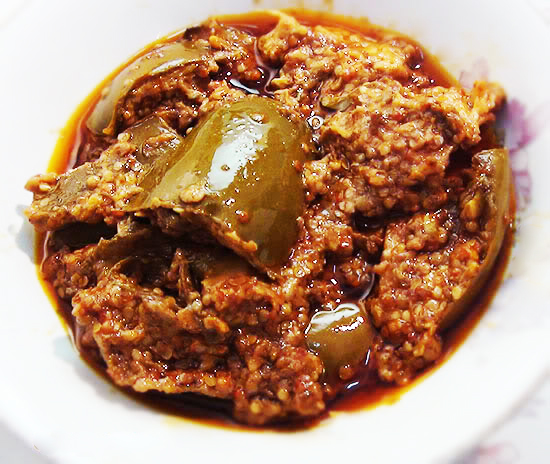

Ingredients:
1)675gms / 11/2 lb. Green Aam (Mangoes)
2)575gms/11/4lb Sugar
3)2tsp salt
4)1tbsp white cumin seeds
5)2tsp brown cardamom seeds
6)1tbsp poppy seeds
7)1tsp red chili powder
How to make mango pickle (aam ka mitha achar):
1)Wash, peel and grate the aam (mangoes). There should be about 450gms / 1lb of flesh.
2)Add sugar and salt and mix well in a large bowl.
3)Roast cumin seeds, cardamom seeds and poppy seeds, stir in chili powder and mix with the sweetened mango.
4)Turn the mango pickle into a sterilized jar, cover with a clean cloth and leave out in the sun or in warm, light place for about a week.
5)Shake the jar at least once a day.